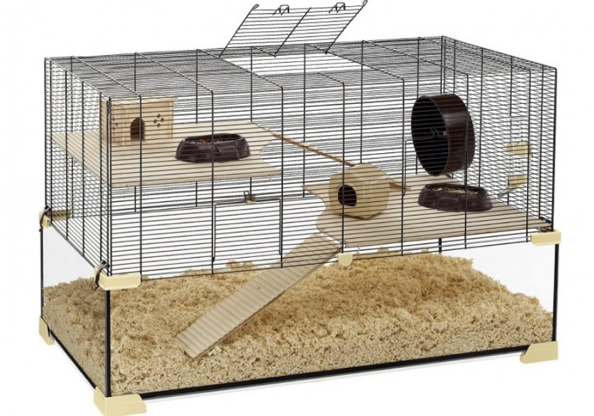

Как содержать китайских хомяков?
Ухаживать за хомяками очень просто, пожалуй, именно это выступает основным аргументом при приобретении первого питомца для ребёнка. Однако, прежде, чем обзавестись этим зверьком, необходимо узнать об особенностях его содержания дома.
Клетка
Приобретение грызуна предполагает одновременную покупку домика, в котором он будет находиться. Существуют стандартные клетки для морских свинок, шиншилл и прочих грызунов, уже оборудованные всем необходимым, но зачастую они непригодны для содержания в них Cricetus Griseus и других декоративных хомяков: эти зверьки настолько юркие, что способны легко проскользнуть между прутьев.
Основные требования к клетке таковы: размер дна должен быть не менее, чем 30х50 см, чтобы животное могло свободно передвигаться, не испытывая тесноты. Важно обратить внимание на расстояние между прутьями клетки, оно должно составлять 5–6 мм, не более, чтобы любопытные малыши не застряли или не сбежали, особенно это правило важно, когда у самки появляются детеныши, вес которых не превышает 3–4 грамм.

Что должно быть в клетке?
Чтобы животное комфортно чувствовало себя в своём жилище, необходимо оборудовать его с учётом потребностей зверька и гигиенических норм.
- в клетке обязательно должен быть домик для сна, его можно приобрести в любом зоомагазине или соорудить самостоятельно из дерева или пластика или просто натянув небольшой отрезок ткани между прутьев в виде навеса;
- отдельно в клетке размещаются поилка и кормушка зверька. Поилки продаются в магазинах зоотоваров, напоминают внешне поилки для птиц, но снабжены специальной трубочкой, из которой малютка может пить, не рискуя захлебнуться. Кормушку можно использовать как специальную, так и обыкновенную небольшую мисочку из нержавеющей стали, не слишком глубокую, чтобы хомяк мог доставать из неё корм;
- хомяки удивительно чистоплотны и, понаблюдав за своим питомцем, хозяин заметит, что тот испражняется чаще всего в строго выбранном им уголке клетки. В целях соблюдения гигиены и уменьшения площади ежедневной уборки стоит обзавестись хомячьим туалетом: они продаются в зоомагазинах, но многие умельцы делают их своими руками из пластиковых пищевых контейнеров или баночек. Достаточно проделать небольшое отверстие для входа и насыпать внутрь опилки или специальный безопасный наполнитель;
- китайские хомячки очень активны, особенно в ночное время, в естественных условиях они способны преодолевать огромные расстояния, поэтому, чтобы любимец не засиделся и не заскучал, нужно установить в его домик беговое колесо
- зубы грызуна растут на протяжении всей жизни, поэтому хомяку необходимо обо что-то их стачивать, чтобы избежать врастания клыков в нёбо. Чаще всего питомцам предлагаются чисто вымытые небольшие кусочки древесных веток (вишня, яблоня, другие плодовые деревья) или специальный минерально-солевой камень, продающийся в зоотоварах. Такой камень позволит питомцу не только сточить зубки, но и пополнить организм запасами натрия, калия и других полезных минералов.
Клетка хомяка раз в неделю должна подвергаться тщательной чистке и мытью с дезинфицирующим средством, безопасным для животных, опилки, которыми засыпается пол подлежат при этом полной замене. В течение недели достаточно только ежедневно убирать помёт из туалета и мыть кормушку и поилку.
Чем кормить хомяка?
Основой рациона для любой разновидности хомяков является готовая сухая зерновая смесь, к этому корму для пополнения запасов витаминов и минералов добавляются другие группы продуктов:
- овощи и фрукты: морковь, тыква, яблоки, груши, кукуруза, абрикосы, сливы, болгарский перец, в небольших количествах брокколи, стручковая фасоль, молодой зелёный горошек в стручках;
- различная зелень: зелёный салат, крапива, клевер, зелень укропа и петрушки; сухофрукты: изюм, курага, чернослив, сушёные яблоки, орехи (за исключением миндаля).
Грызунам необходим источник белка, поэтому раз в неделю рекомендуется давать им один из указанных продуктов: нежирный йогурт без добавок, кефир или творог 0–1% жирности, отваренные вкрутую куриные или перепелиные яйца.
При этом у животного всегда должна иметься в прямом доступе поилка с чистой и свежей водой.
Не рекомендуется давать хомячкам картофель, сыр, белый хлеб, каши, содержащие глютен, а также кормовые смеси, предназначенные для птиц. Категорически запрещено включать в рацион питомца лук, чеснок, специи, жирные молочные и кисломолочные продукты, косточки вишни или абрикоса, миндаль, макароны, белокочанную капусту, сладости, печенье, конфеты, мёд, макаронные изделия. Подобные запреты связаны с природной склонностью данного вида грызунов к сахарному диабету, что требует контроля потребляемого сахара и продуктов, содержащих глютен.
Вернуться назад